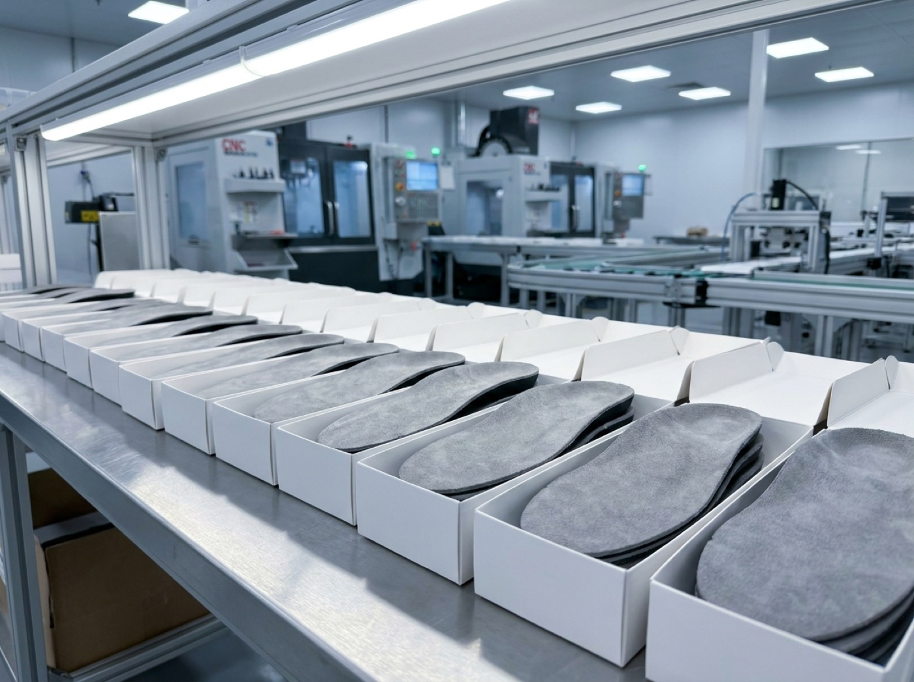
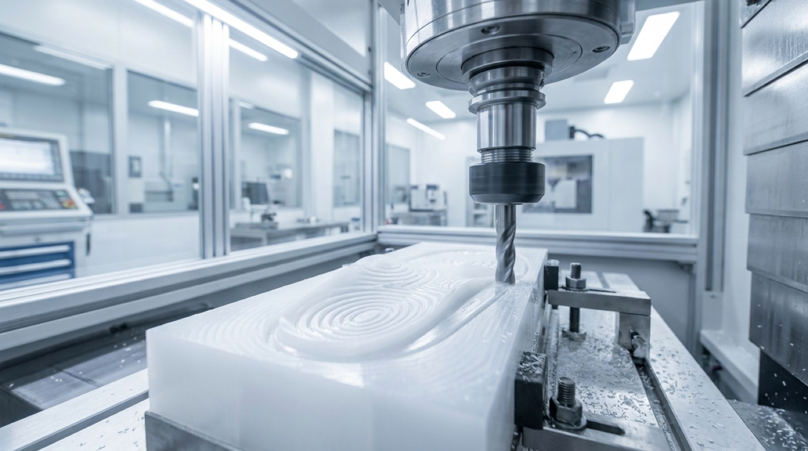

A production line to hand over, or a quiet exit to plan?
Tell us once. We hold your name back, put it to the network, and bring you matched, qualified conversations, instead of you knocking on doors one at a time.
The world's biggest sportswear brands haven't owned their factories for decades. What they own is a dedicated line, a team and a quality standard inside someone else's. The Mill Hub brings that model to milled orthotics.
The two journeys are different, so they get different pages. Pick yours.

Start on the map. See what serves your market today, and what a dedicated cell would look like.
Open the capacity map
Run a milling facility? The hub needs nodes in Europe and Australia next. Tell the desk what you run.
Register your facilityAn established multi-site manufacturer allocates a section of its production floor to you alone, trained on your product, your styles, your top covers and your packaging, and held to your standard.
Per-pair pricing materially below in-house manufacturing cost in high-wage markets, with design work included, not bolted on. We share the exact per-pair number when we introduce you.
Production mirrored across facilities on different continents. A storm, a materials shortage or a shutdown in one region never reaches your customers; work simply reroutes.
One named production manager, as accountable to you as your own factory floor. "Rush this one through", "change how we do the heels" — and it happens. The brand and the relationships stay yours.
Any step change, up or down, is the moment this model earns its keep. If one of these is you, the conversation is worth a chat.
Three steps. Identities, pricing and references are never published; they are shared only when both sides agree to meet.
Volumes, materials, systems, and what's changing in your business. Two minutes, in confidence.
Chris or Will reviews every request against capacity we have seen first-hand — usually within two working days.
Names, faces, facilities and the exact per-pair number, shared once both sides choose to meet.
Tell us once. We hold your name back, put it to the network, and bring you matched, qualified conversations, instead of you knocking on doors one at a time.